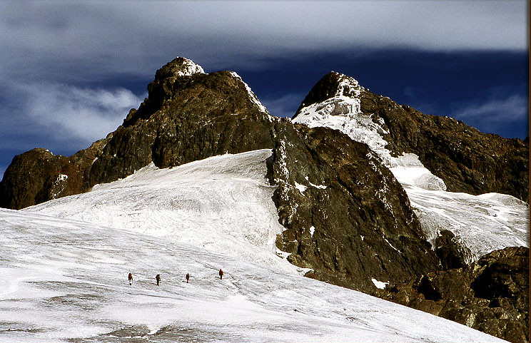
03 Days & 02 NightsMount Rwenzori Hiking Safari
A fast-paced mountain expedition focused on quickly accessing the lower and mid-altitude sections of the Rwenzori Mountains. Ideal for experiencing unique Afro-alpine vegetation, rivers, and dramatic valley views.
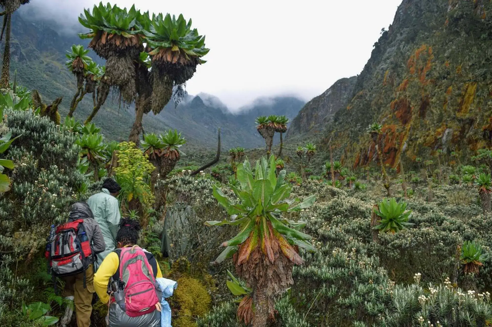
06 Days & 05 NightsKibale & Mount Rwenzori Safari
This 6 Days Kibale Forest and Mount Rwenzori hiking Safari is specially tailored for those travelers seeking primate tracking and alpine climbs. Combines wild chimpanzee encounters with an introductory expedition into the high ridges.
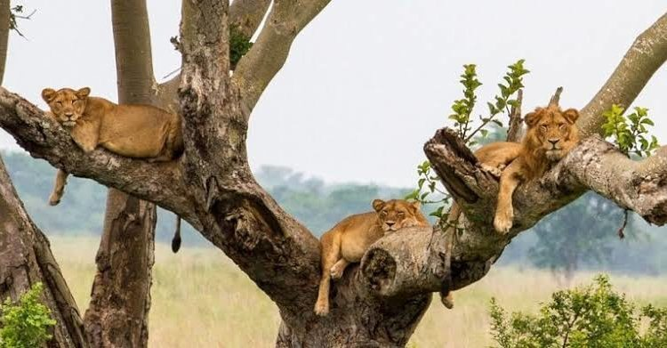
06 Days & 05 NightsQueen Elizabeth & Rwenzori Safari
This 6 Days Queen Elizabeth and Mount Rwenzori Safari itinerary is designed to merge classic big game tracking with high-altitude alpine exploration. Experience the savannah wildlife of Kazinga Channel before ascending the scenic ridges of the Rwenzori massif.
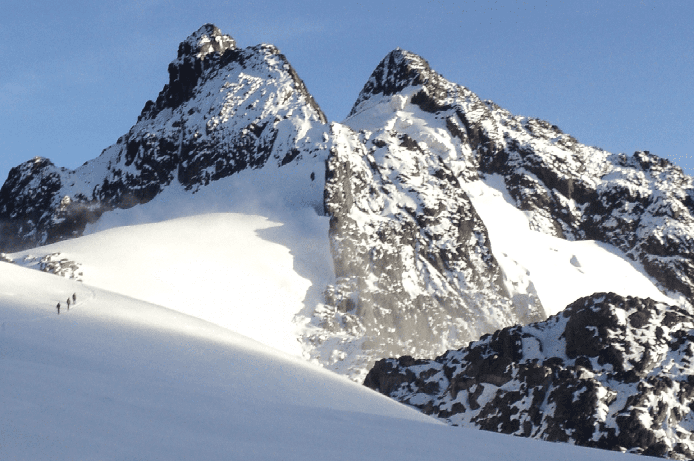
11 Days & 10 NightsRwenzori Mountains Trekking Safari
Bestriding the border between Uganda and the D.R. Congo, the underrated, isolated, little-known and less frequently climbed Rwenzori Mountains is a top-notch hiking destination. Offers an elite, multi-day high-altitude glaciated expedition through otherworldly giant lobelia fields and sheer bog terrains.
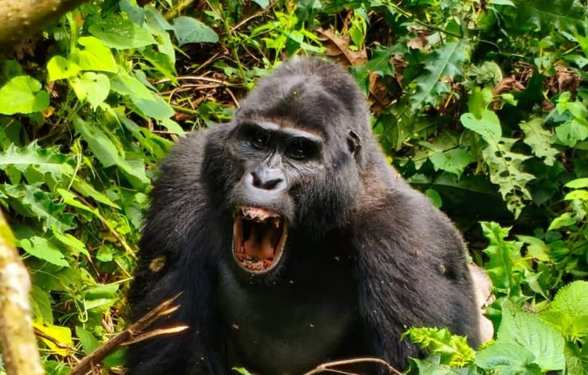
10 Days & 09 NightsBest of Uganda Gorilla & Wildlife Safari
On this premium 10 Days Uganda Gorilla Wildlife Safari, you will transfer to Murchison Falls National Park by road via Ziwa Rhino Sanctuary to track rhinos. Seamlessly blends big game savanna safaris, chimpanzee trekking, and a rare encounter with mountain gorillas.
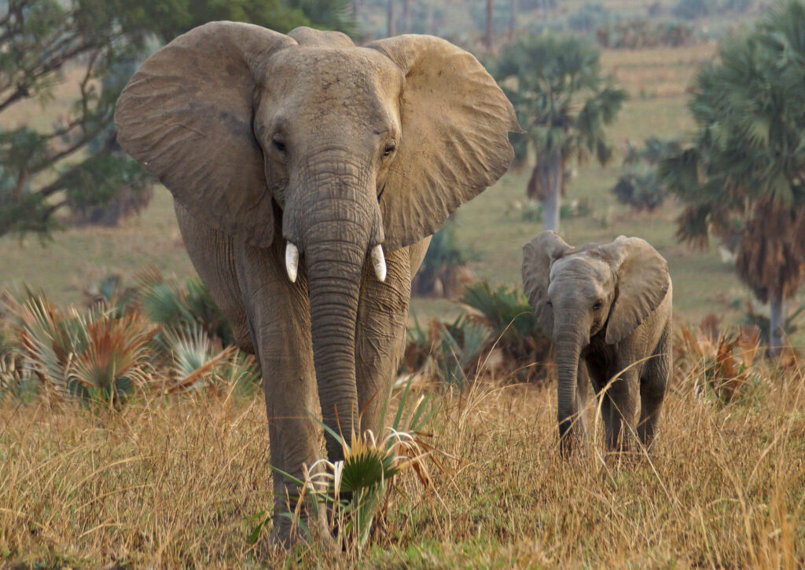
14 Days & 13 NightsUganda Primates & Big 5 Adventure
Embark on our small group Journeys that bring you up-close in person with Nature! From magical encounters with the wild mountain gorillas and chimpanzees—our closest cousins—to tracking the legendary savannah Big Five across diverse landscapes.
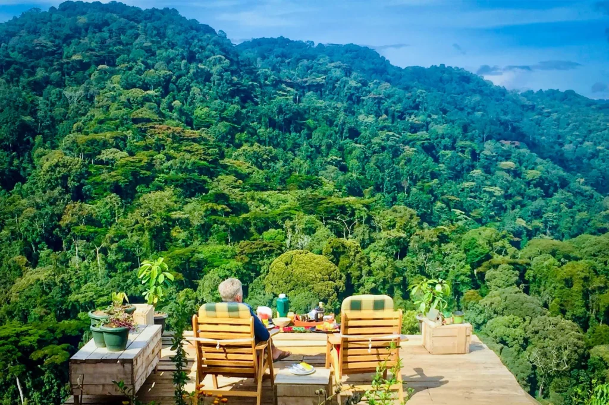
16 Days & 15 NightsInto the Wild Heart of Uganda
Our incredible 16 days into the wild Heart of Uganda, Gorillas, Big Cats & the Nile Experience Luxury Safari offers the ultimate exploration of the pearl of Africa. Seamlessly blends glaciated mountain foothills, apex predators, ancient river systems, and close-up primate encounters.
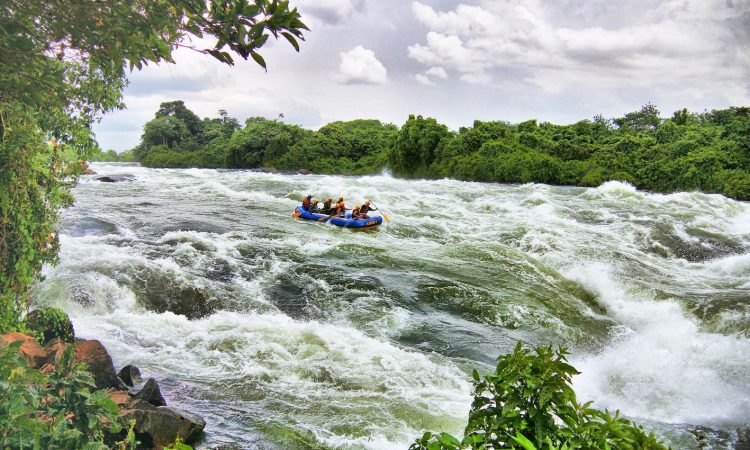
20 Days & 19 NightsClassic Uganda Primates & Rafting Wild Photo Adventure
Mountain gorilla trekking in Uganda is one of the greatest safari experiences and a true "once in a lifetime trip." Have the most thrilling adventure blending white-water Nile rafting, heavy photographic big-game safaris, and legendary multi-sector primate tracking expeditions.
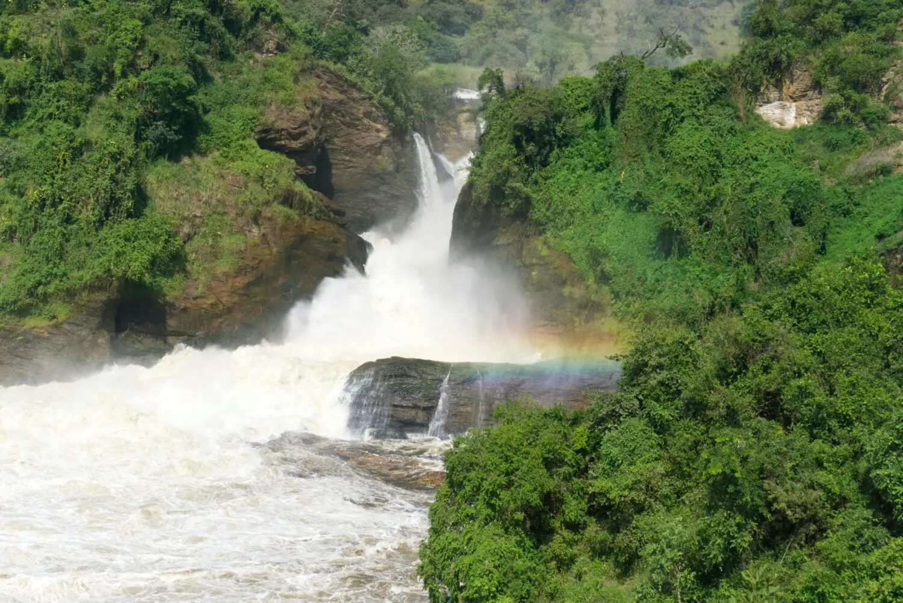
06 Days & 05 NightsKidepo Valley & Murchison Falls Big Five Uganda Adventure
Our 6 days Kidepo Valley and Murchison falls national park safari is one of the best safaris in Uganda. This safari will take you to the remote, rugged wilderness of the north to audit isolated apex predators before charting classic riverine big game networks down the Nile.
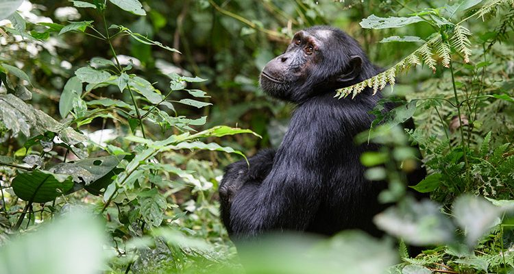
05 Days & 04 NightsUganda Chimpanzee Wildlife Adventure Safari
Our 5 days Queen Elizabeth and Kibale Forest safari takes you to the best two Uganda safari destinations. It involves high-utility activities such as deep tropical chimpanzee tracking, classic savannah big game viewing, and pristine riverine marine boat cruises.
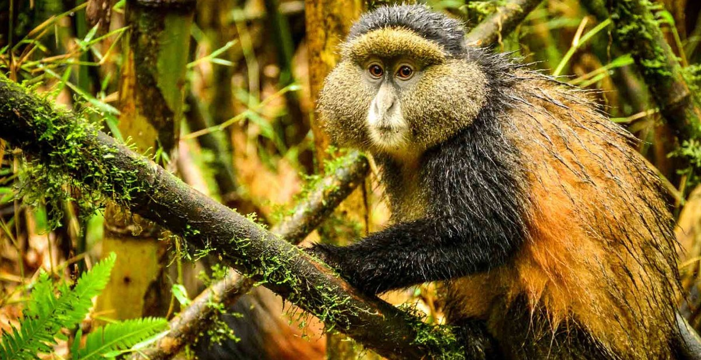
04 Days & 03 NightsLuxury Gorilla & Golden Monkey Trekking Safari
You will visit Mgahinga Gorilla National Park for an endangered golden monkey trekking tour and get up close and personal with endangered mountain gorillas of Bwindi. An elite primate expedition designed for premium comfort and unmatched wildlife intimacy.
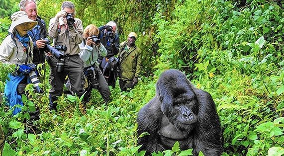
12 Days & 11 NightsRwenzori Hiking & Gorilla Trekking Safari
The 12 days Rwenzori hiking and gorilla trekking safari explores two legendary UNESCO World Heritage sites—Rwenzori Mountains National Park and Bwindi Impenetrable National Park. Mount Rwenzori’s glaciated summits perfectly complement the deep jungle primate tracking.
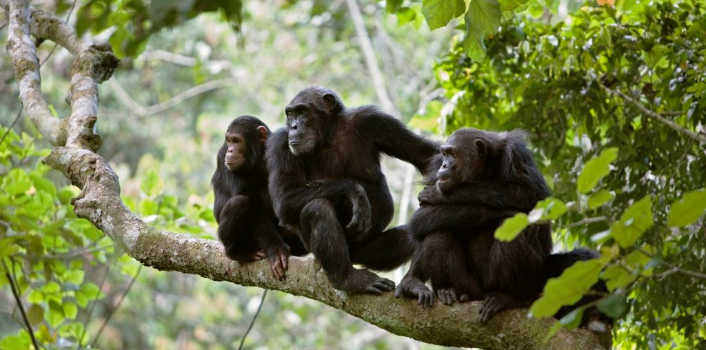
03 Days & 02 Nights3 Days Queen Elizabeth & Chimp Trekking
From sprawling savannah to humid forest, sparkling lakes and fertile wetlands, it's little wonder that Queen Elizabeth National Park is indeed a Medley of Wonders. This focused itinerary balances classic big-game tracking across volcanic plains with deep, sunken-forest chimpanzee trekking operations.
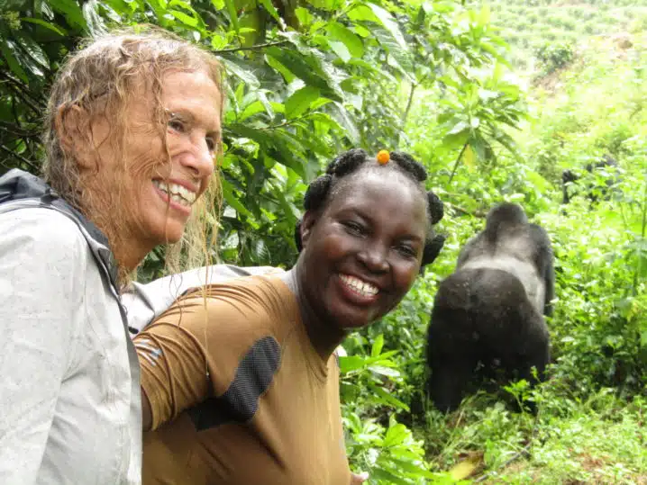
10 Days & 09 NightsBest of Wild Uganda Gorillas, Chimps & Wildlife - Only Women Tour
Our uniquely hand-crafted Ugandan Odyssey safari combines primate trekking and classic safari encounters all packaged as one to offer an exceptional experience. This female-exclusive expedition provides empoweringly intimate, up-close moments with nature and local communities.
 09 Days & 08 Nights
09 Days & 08 Nights
Uganda Luxury Best of Gorillas & Chimps
From mountain gorillas to tree-climbing lions, this lesser-explored African country offers intimate animal encounters that go far beyond traditional safaris. Our 9 days best of Uganda luxury expedition delivers deep wilderness refinements along premium primate and big-game blocks.
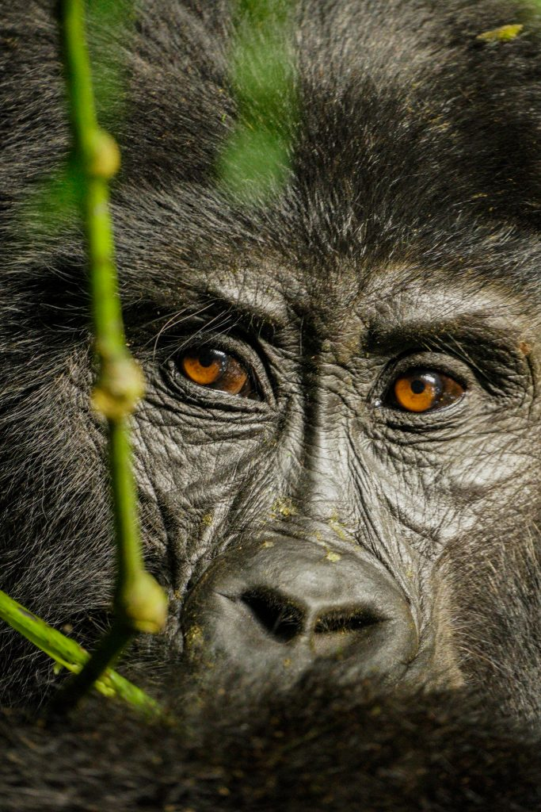
09 Days & 08 NightsUganda Double Gorilla Trek & Wildlife Photo Safari
Embark on a once-in-a-lifetime adventure through Uganda's most iconic wildlife destinations! Spend 9 days immersed in the breathtaking landscapes and diverse ecosystems of this incredible country, capturing heavy photographic records of tree-climbing lions, savanna game, and an elite double mountain gorilla trek.
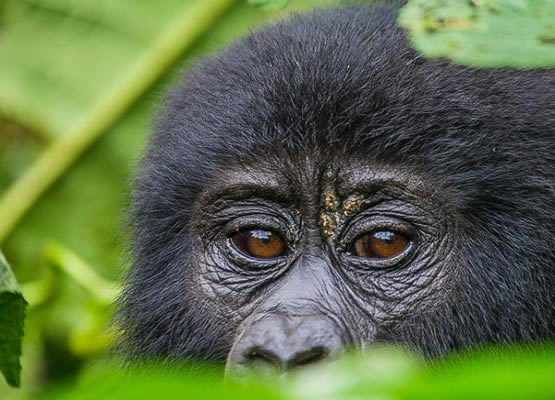
08 Days & 07 NightsClassic Uganda Primates & Big 5 Private Tour
Our 8 Days Uganda Adventure Safari takes you to western and southwestern Uganda, regions richly endowed with various primates, wildlife, and rare bird species. Seamlessly tracks rhinos on foot, captures savanna big cat action, and drops you deep into untamed chimpanzee and gorilla territories.
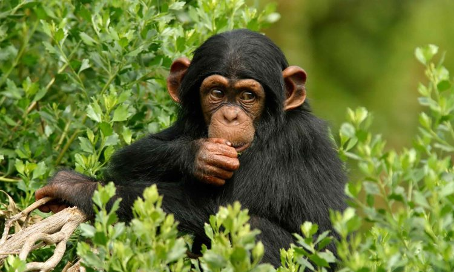
07 Days & 06 NightsUganda's Primates & Wildlife Adventure
Our Journey starts and ends in Entebbe. On this 7-day safari we are particularly interested in primate lovers who will be able to visit Kibale Forest National Park and adjacent tracking sectors. Seamlessly blends dense tropical canopy wildlife with epic savannah big-game explorations.
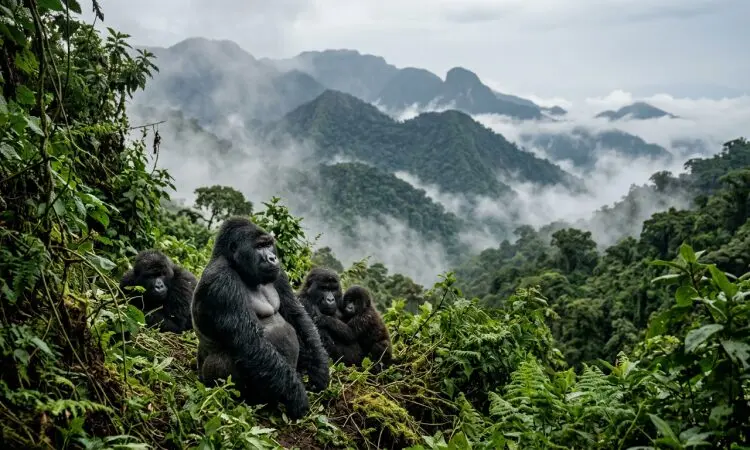
13 Days & 12 NightsBest of Uganda Gorilla Trekking & Wildlife Safari
Welcome to Uganda—The Pearl of Africa, Reimagined, a land where nature tells her stories in whispers of mist and the rhythm of the wild. This comprehensive 13-day flagship expedition balances elite mountain gorilla encounters, deep rainforest primate tracking, and premier riverine big game safaris.